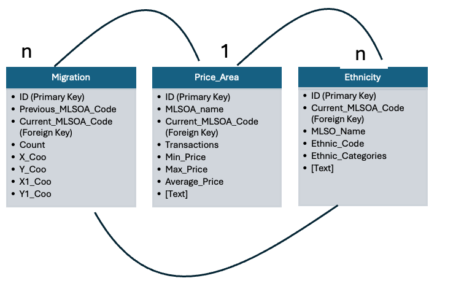

SQL Projects
I leverage SQL to analyze complex datasets. My projects utilize advanced queries and spatial analysis techniques to uncover insights and create dynamic visualizations. I'm passionate about transforming data into clear, actionable insights that inform decision-making.
My SQL Portfolio

Analyzing Migration, Ethnicity, and Housing Prices in the UK
I utilized SQL to analyze the relationship between migration flows, ethnic diversity, and house prices across the UK using datasets from the UK Data Service. This project reveals significant patterns and correlations that inform housing trends and policy decisions. By uncovering how these factors interact, the analysis emphasizes the importance of data-driven insights in understanding housing markets. Click here to view.

SQLite Cloud: Practising SQL Querries
I utilized SQL to practice querying a cloud-based database focused on ACT camera locations and fines, leveraging datasets obtained from the ACT Government. This project highlights the efficiency of SQL in extracting meaningful insights from large datasets. By analyzing traffic camera data, the work emphasizes how data-driven approaches can enhance urban planning and policy-making related to public safety and traffic management.Click here to view.

Housing search pattern
I used Rightmove plc's data to predict housing trends and employs GIS to explore demand patterns and mismatches. Findings show a link between online views and sales values, informing planners on housing decisions, addressing gaps in analyzing user-generated data and market outcomes.Click here to view.

Ethnic Groups and Migration Patterns
I examined the spatial migration patterns of ethnic groups in the UK using 2021 Census and house price data. I identified migration clusters, mapping these patterns helps link migration to house price clusters, identify problematic trends, and propose solutions to improve the issues faced by these groups.